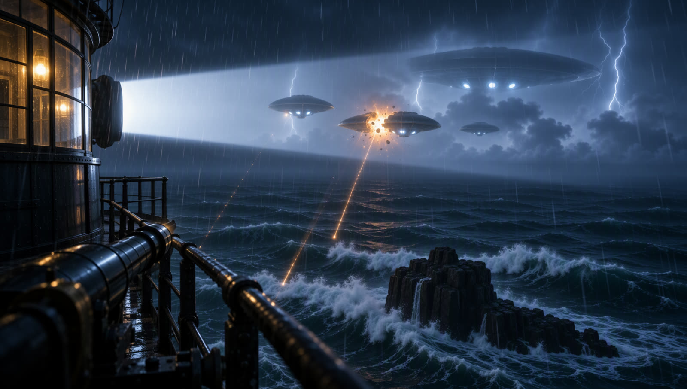
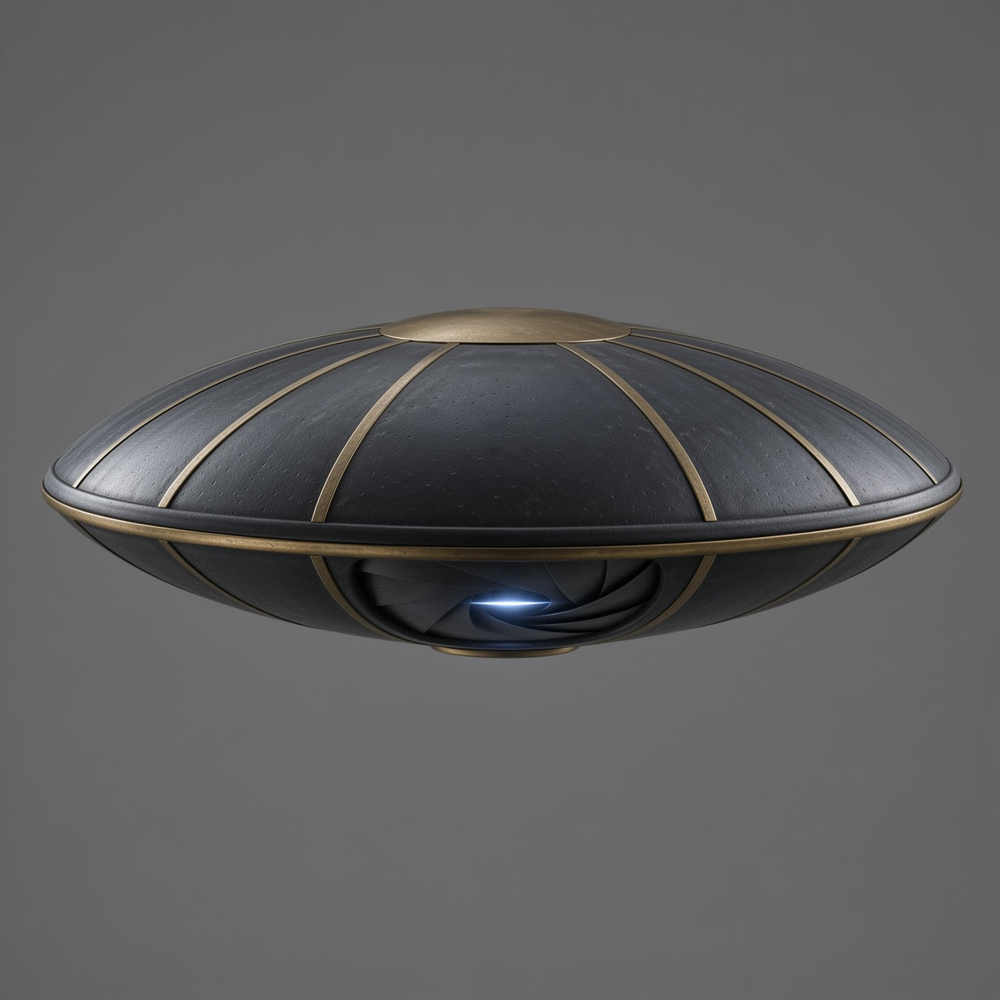
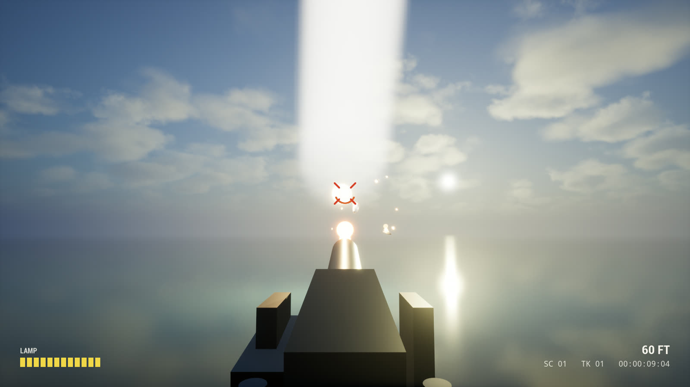
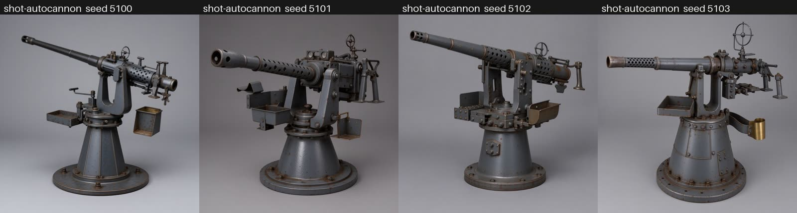
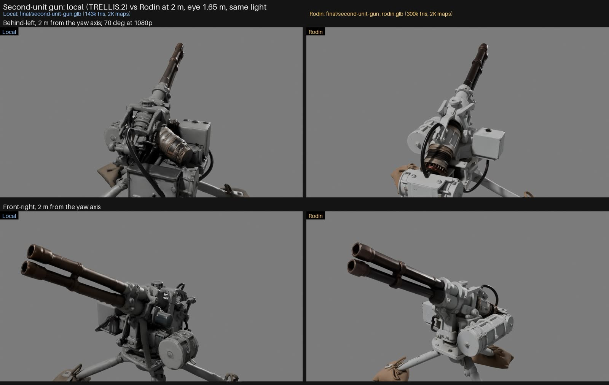
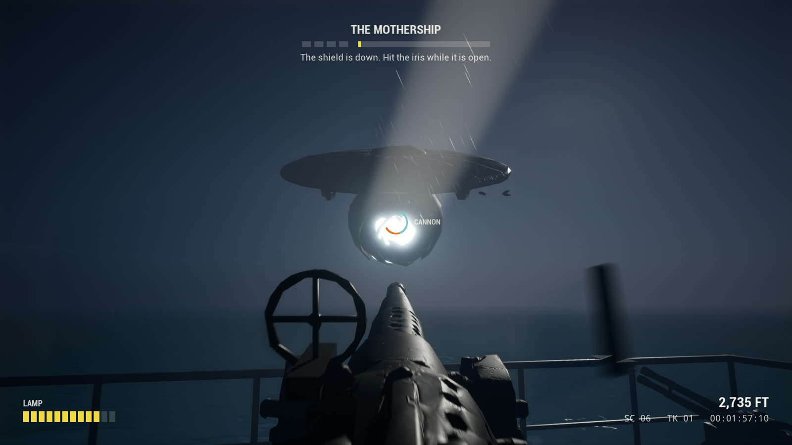
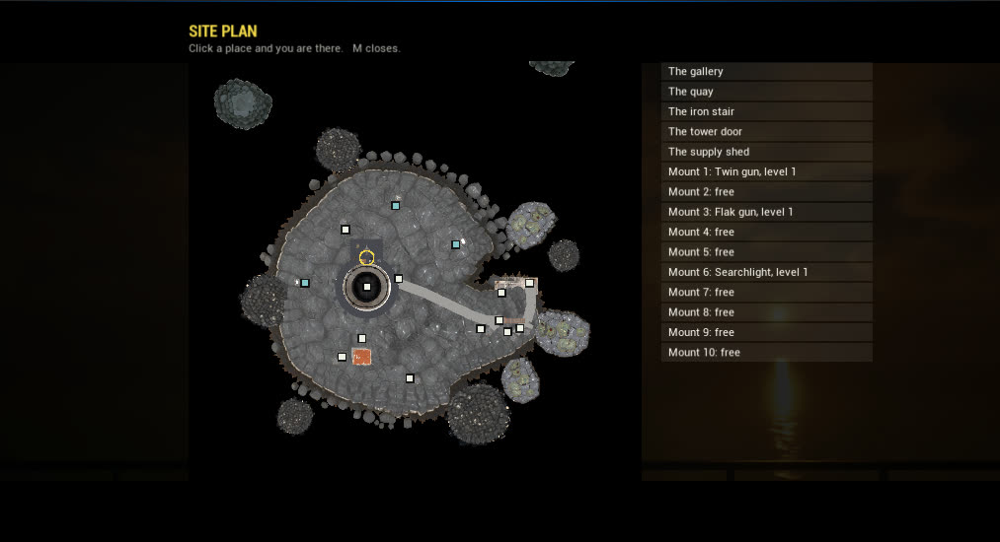
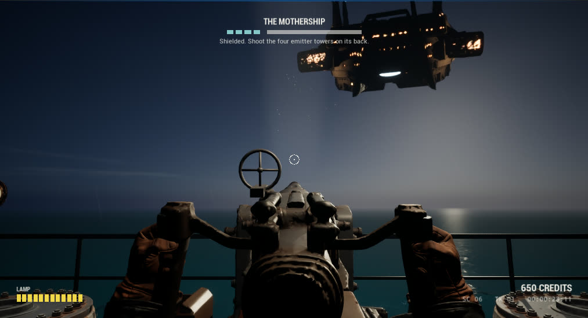
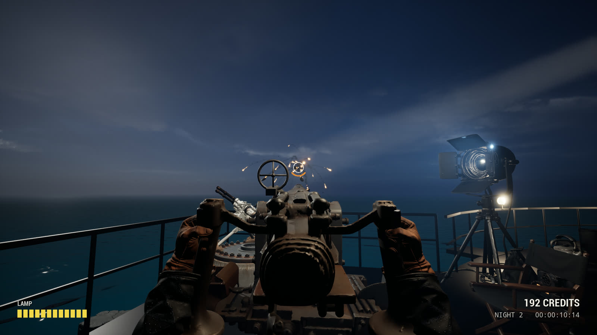

Day 1 Thursday 12 November
All times in this log are Danish time (CET, UTC+1): 6 hours ahead of New York, 9 hours ahead of Los Angeles. Point at a time to see it in your own.
Day one: a gun on a lighthouse in a storm
9 pictures 3 failures 14 min read
Checkpoint The first version, packaged and played
This log was started on Friday 13 November, when FYR was rebuilt in a fresh repository. This first entry retells Thursday 12 November from the game's own records: its prompt files, its pictures and its commit history, which is kept in the jam's first repository (private, and open to Epic on request). The times are when things happened, Danish time.
The idea
A lighthouse on a black rock in a storm at sea. Flying saucers want its lamp out, and the keeper defends it. The idea is the developer's own, written down weeks before the jam as one of several game ideas; nothing made for it then is in the game. The jam's theme, "Director's Cut", was announced on the evening of 11 November, and a prompt library was written that evening, as the rules allow. Nothing was run before Thursday 06:00.
06:05: the look, before anything was built
The first thing the image model did was render that prompt library: 20 prompts, four seeds each, 80 pictures in 328 seconds, on the one graphics card in this PC. Four were stills of the look to aim for. Sixteen were studio shots of single objects on a plain grey background, which become the references for the 3D models.


PromptCinematic film still, anamorphic lens, night, violent storm at sea. First-person view from the wet iron gallery of a lighthouse: rain…113 words
Cinematic film still, anamorphic lens, night, violent storm at sea. First-person view from the wet iron gallery of a lighthouse: rain streaking through a huge white lighthouse beam that cuts across the frame, towering black-green waves breaking white on basalt rock below. In the beam, three dark disc-shaped craft with brass ribs and glowing blue-white irises underneath, one of them breaking apart in an orange explosion that lights the low cloud from inside; tracer rounds arc up from the foreground gun. Lightning silhouettes a much larger disc inside the cloud. Wet metal reflections, volumetric light, photoreal, fine film grain. No text, no letters, no numbers, no logos, no brand names, no maker's badges.
Every picture was looked at before it was kept, and 21 of the 80 were thrown out: twelve for marks that read as text or labels (the rules allow no logos or brands, so anything that looks like lettering goes), six for a wrong design, one for a shape that looked borrowed, and two that were simply weak.
The saucers are our own design
They are not ships from any film or game. The rule for all of them: dark matte hulls like fired basalt, banded with dull brass ribs, no windows, no antennas, no lettering. Underneath, a mechanical iris like a camera's aperture, which opens to a cold blue-white light when the saucer attacks. It is their weak point and the one bright thing on them, and it fits the theme without a word on screen.


PromptA small unmanned flying craft about three metres across as a single object: a smooth lens-shaped disc with a hull of dark matte ceramic…150 words
A small unmanned flying craft about three metres across as a single object: a smooth lens-shaped disc with a hull of dark matte ceramic like fired basalt, divided by eight dull brass ribs that run from the rim to a low brass cap on top; on the underside, visible in this view from slightly below, a closed mechanical iris of overlapping dark blades like a camera aperture with a thin line of cold blue-white light at its centre. No windows, no antennas, no legs, no markings. An original design. Centred, the whole object in frame with clear space around it, three-quarter view from slightly below, on a seamless plain mid-grey studio background, soft even studio lighting from all sides, no cast shadow on the background, no other objects, photorealistic product photograph, sharp from front to back. No text, no letters, no numbers, no logos, no brand names, no maker's badges.
06:49: the gun first, in a grey box
The plan's first gate was not a picture. It was that firing at a moving grey target feels good, because no model can save a gun that does not. Fifty minutes in, everything on screen was cubes and cylinders, and the gun worked:
- Rounds are real things. Each flies at 900 metres a second with gravity and leaves a tracer. A near miss still bursts beside the hull, as anti-aircraft shells with proximity fuzes do, so leading a target matters, but a new player still hits.
- Recoil is three springs: the gun's slide, the view's kick and a small jump of the camera's zoom.
- Heat: about twenty rounds of continuous fire and the barrel locks, so the player fires in bursts.
- Brass: every shot throws a casing that bounces on the iron deck or falls into the sea 30 metres below.
- Sound arrives late: an explosion 300 metres away is heard almost a second after it is seen.


An agent has no hands on a mouse, so two things stand in for a player. A bot at the gun (30 lines: pick the nearest saucer, work out where it will be when the round arrives, turn, fire in bursts) fired 90 rounds in its first minute, hit with 71 and brought down 22 saucers. And the game can run with no window, play for a set time, save a picture every few seconds and write its numbers to a log; the agent then looks at the pictures. That is how most faults this week have been found.
The sound came from a second agent at the same time: 89 effects in 28 minutes, made by a Python script from nothing but noise, tones, filters and envelopes. Nothing is sampled or downloaded. The gun shot has eight layers, from a 1 ms pressure crack to a tone that drops from 125 to 43 Hz for the thump and one echo off the water. No agent can hear, so each sound was checked by its spectrogram and its loudness; the developer's ears had the last word, and on Friday the sound was one of the things he kept.
06:18: Rodin against the local models
The first job on the jam's Rodin credits (Hyper3D's cloud model, the one tool that does not run on this PC) was a comparison, not a commitment. One studio shot of the gun went through three routes, and an agent rendered all three the same way and judged them from the player's eye:
| Route | Result | Verdict |
|---|---|---|
| Rodin Gen-2.5 High | one watertight mesh, every part present, even the second grip the picture hides | used |
| Pixal3D, on this PC | good from the reference angle; one grip missing, no ring sight | small props only |
| TRELLIS.2, on this PC | the perforated barrel jacket melted, right where the player looks | small props only |


PromptA heavy mid-century naval anti-aircraft autocannon on a pintle mount as a single object: a thick conical steel pedestal bolted to a round…152 words
A heavy mid-century naval anti-aircraft autocannon on a pintle mount as a single object: a thick conical steel pedestal bolted to a round base plate, a U-shaped yoke carrying a single long 40 mm barrel with a flared flash hider and a perforated cooling jacket, twin spade grips with a butterfly trigger at the rear, a ring-and-bead spider sight, an ammunition feed tray on the left and a brass-catching chute on the right. Dark grey naval paint worn to bare steel on the edges, oil stains, light rust in the seams. Centred, the whole object in frame with clear space around it, three-quarter view from slightly above, on a seamless plain mid-grey studio background, soft even studio lighting from all sides, no cast shadow on the background, no other objects, photorealistic product photograph, sharp from front to back. No text, no letters, no numbers, no logos, no brand names, no maker's badges.
So the things the player looks at longest went to Rodin, and small props seen at a distance stayed local and free. By the end of the day Rodin had made 26 models for FYR, about half a credit each, every one from one of our own studio pictures with its metadata stripped. Each later model was again put beside the local one in the same light before it was used:
PromptA small automatic twin-barrel anti-aircraft gun on a low tripod, 1.5 m tall: two long over-and-under barrels, an ammunition drum on each…57 words
A small automatic twin-barrel anti-aircraft gun on a low tripod, 1.5 m tall: two long over-and-under barrels, an ammunition drum on each side, a grey motor box with a braided cable, a turntable ring under the gun, three tubular legs each weighted with a canvas sandbag. Worn grey naval paint, bare steel edges. No markings, no text.


By 08:30: a sea, a storm, a laser and a mothership
The engine's Water plugin gave a real ocean in four minutes (the first picture showed a black hole round the rock, because the ocean's "island" outline was a 200 metre square). Skies became rows of numbers in one tuning file, and the storm got lightning about nine times a minute, its thunder arriving late by the strike's distance. A laser arrived as a second barrel: hold and sweep, and a saucer it kills does not explode but falls in two halves with glowing edges. The theme's best joke, a director's cut where the gun cuts, was in the game before 07:30.
Then the mothership, and the bot could not beat it: in five minutes it shot off one of the four towers on its back. The hit test treated the hull as a thick lens, and the towers stood inside that lens, so every round burst on the "shield" before reaching them. With the hull tested as a thin disc plus the sphere underneath, the bot stripped the shield in under a minute and then lost twice, because the open iris drained the lamp faster than the bot could hurt it. The iris now drinks half as fast and flinches shut under enough fire. The bot won the fight in two minutes and seven seconds.


Mid-morning: more than shooting, then a tower defence
The developer watched the bot play and asked for more than shooting: progress that feels good, placing turrets, a bigger gun in the lighthouse itself, a record to beat. By half past ten the keeper could leave the gun and walk, the great lens burned from the lantern room, and there was an endless mode. At twenty past eleven he played it himself and said, in short, that this was the wrong game: he had imagined turrets round the lighthouse doing most of the fighting, built and upgraded by the player, with progress that never stops, and a dark lamp should not end the game and leave nothing to come back for.
He was right. The design turned the same hour. Every night became a level, prepared without a clock until the keeper says READY. A lost night costs nothing owned. An asset agent laid out the rock from eight new Rodin models, with ten mounts on its ledges, each with the arc of sky it can see, and four turret kinds to put on them: a twin gun, a flak gun whose shells burst among flocks, a searchlight that makes what it lights easier to kill, and a heavy gun for the biggest target.
A tower defence has to be winnable by its towers, and nobody here has hours to watch. So a test bot that stops firing after Night 3 and spends its credits on turrets ran the game without drawing a picture, at 67 times real time. Its first run was stuck on Night 6 for an hour of game time: no turret ever aimed at the mothership's towers. After two fixes the same bot went from Night 4 to Night 24 in 44 minutes of game time.


The developer's notes, and plain words
In the afternoon he played for an hour and sent ten notes. The buying screen looked typed in. The sound of a wreck coming down screeched. A turret's barrel went through the rail, and saucers sometimes sat inside each other. The title screen looked amateurish. He wanted many achievements, some hidden. Each was fixed or rebuilt within the afternoon; the clipping within half an hour.
The most useful note was about the theme. The first version had framed every night as a scene of a film being shot: a slate, takes, "footage" as the currency, a cutting room where an upgrade was a deleted scene put back. He found it laid on so thick that the buttons were hard to understand. The rule that came out of it holds for the rebuild: plain words everywhere (credits, play, easy), and film words only where they are a real action.
PromptAn enormous alien warship about 500 metres long, a flying fortress built from thick slab-sided armour plates of dark gunmetal with worn,…96 words
An enormous alien warship about 500 metres long, a flying fortress built from thick slab-sided armour plates of dark gunmetal with worn, paler edges, with a tall blade-like keel at the prow, rows of round ports underneath and rows of tiny warm lights along the plate edges. Six box-shaped pods hang from its flanks on short armoured arms; their faces and undersides are open lattice grilles glowing furnace-amber from inside. Four tall, separate, tapering emitter towers with ribbed collars and glowing tips stand at the four corners of its flat back deck. No markings, no text.


Where the first version stood
- About 12,500 lines of C++: the gun with its heat, recoil and brass; a laser that cuts saucers in two; the great lens; four turret kinds on mounts with arcs of fire; scouts, harvesters, a carrier and the mothership with its phases; endless nights; a sea, a storm and lightning; achievements, settings, saving, and a bot that plays.
- 54 kinds of 3D model in the level, Rodin's and local; 132 sound effects of our own synthesis; 90 voice files from Ming-3.0 TTS in two designed voices; six music cues from ACE-Step.
- Four packaged builds that afternoon, each played by the bot from its zip without a crash, at 244 to 268 frames a second on average at 2560 by 1440. The zip was 827 MB of the 1 GB the rules allow.


What it lacked
Looking at it again on Friday morning, the developer kept its sound, its controls and the feel of the gun. What it lacked was the rest. It was still mostly shooting: placing turrets, upgrading and the lens hid behind menus and walking. And nothing on the screen told a new player what to do, where the next threat was, or why. The next entry is the answer: the same lighthouse, rebuilt around a plan he drew up that morning.